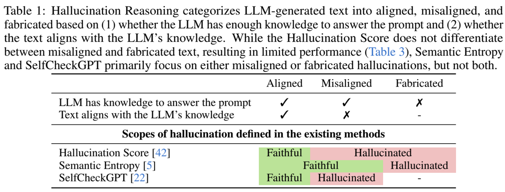
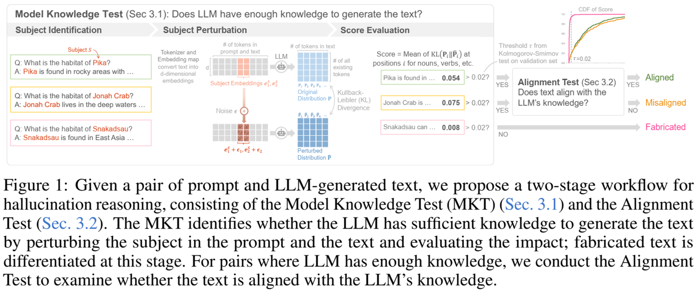
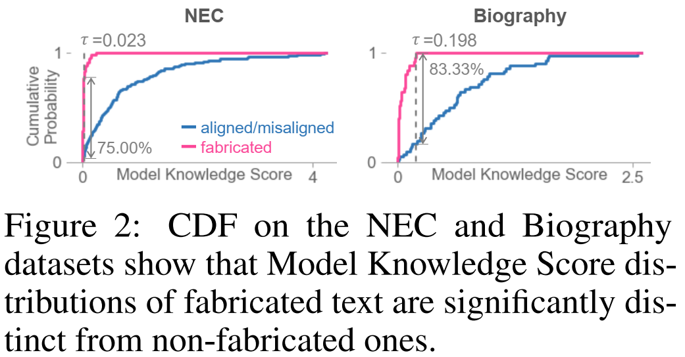
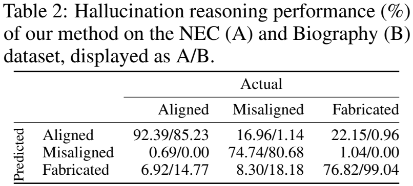
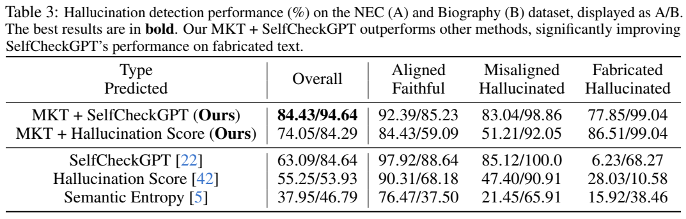

论文阅读二十三：基于零样本知识测试的LLM幻觉推理
摘要
LLM幻觉，LLM偶尔会产生不忠实的文本，对其实际应用构成了重大挑战。大多数现有的检测方法依赖于外部知识、LLM微调或幻觉标记的数据集，并且它们不能区分不同类型的幻觉，而幻觉对于提高检测性能至关重要。我们引入了一个新的任务，幻觉推理，它将LLM生成的文本分为三类：对齐、未对齐和伪造。我们新颖的零样本方法评估LLM是否对给定的提示和文本有足够的知识。我们在新数据集上进行的实验证明了我们的方法在幻觉推理中的有效性，并强调了它对提高检测性能的重要性。 论文地址
引言
大型语言模型（LLMs）在生成各种主题的文本方面表现出了非凡的能力[35,32]。然而，它们经常产生幻觉——不正确或无法验证的内容——这对它们的实际应用构成了重大风险[2]。检测这些幻觉对于确保可靠性至关重要[12]，但由于幻觉文本的看似合理，因此具有挑战性[37]。
在LLM生成的文本中检测幻觉的研究探索了几种方法，包括将文本与外部知识进行比较[19,25,31]，微调LLMs[40,36,18]，以及训练分类器识别幻觉[1,4,30]。然而，这些方法需要外部知识、LLM微调或使用幻觉标记数据进行监督训练。为了解决这些限制，人们对直接分析LLM输出的无源零样本方法越来越感兴趣。这些方法包括一致性检查[22]、不确定性估计[42,5,16,3,38]，以及提示LLM评估文本的正确性[6,43]。
然而，现有的检测方法无法区分幻觉的不同类型和原因[44,10]，这对于准确检测和解决幻觉至关重要。具体来说，当LLM缺乏相关知识时，LLM提示方法可能会随机猜测文本的正确性，而大多数基于不确定性的方法无法识别LLM固有随机性造成的错误[29,7]。区分幻觉的根本原因可以更准确地检测，甚至可以提出潜在的解决方案：如果LLM缺乏知识，可以提供外部知识；否则，可以简单地重新生成响应。
为了填补这一空白，我们将LLM生成的文本分为三种类型：对齐、未对齐和伪造（表1）。错位文本是由采样随机性或对先前标记的依赖性引起的[29,7,41]，而当LLM缺乏相关知识时，会生成伪造文本[10,44]。基于这种分类，我们提出了一个新的任务，幻觉推理，旨在将LLM生成的文本分为这三种类型之一。我们的贡献：
- 新的幻觉推理任务，以更好地理解和检测幻觉（第3节，表1）。我们的数据集创建过程可用于未来幻觉推理的研究（第4节）。
- MKT，一种新的零样本方法，用于识别LLM是否具有足够的提示和文本知识，而不需要任何外部知识、标记数据集和LLM微调（第3.1节，图1）。
- 实验证明了我们的方法在QA和自由格式文本生成方面的优越性 。将我们的方法整合到现有的检测算法中，显著提高了它们的性能，强调了幻觉推理的重要性（第4节）。

相关工作
幻觉推理。通过检查数据、训练算法和推理过程，已经努力调查幻觉的原因（[10]第3节）。推理过程中的主要问题包括LLM的知识不足和过度自信，它倾向于将用户偏好置于事实准确性之上，生成过程中的固有随机性，以及对早期标记的依赖（[44]第4节）。根据文献，我们将幻觉分为两种关键类型：（1）伪造，包括缺乏知识和过度自信；（2）错位，归因于随机性或对早期表征的依赖。
幻觉检测。一些方法通过将LLM生成的文本与外部知识进行比较来验证其真实性[19,25,31]。例如，FactScore[25]根据可靠来源检查文本中的原子事实。为了减少对外部来源的依赖，研究人员检查了LLM的内部结构，并训练了分类器来区分忠实和幻觉文本[4,1,30]，或者对LLM进行了微调，以“我不知道”来回答不确定的问题[40,36,18]。然而，由于这些方法需要大的标记数据集，其他方法通过提示[6,17,43]或检查生成一致性[22,38,39,3]来评估正确性，但当LLM过于自信地伪造时，这些方法可能会失败[14]。使用不确定性[11,27,42,5,9]来识别导致LLM产生幻觉的提示的努力往往忽视了随机抽样的幻觉[29,7,41]。我们提出了一个新的方向，通过了解幻觉的原因，在没有任何外部知识、模型训练或不切实际的假设的情况下，更准确、更有洞察力地识别幻觉。
幻觉推理
背景 LLM的文本生成涉及迭代下一个标记预测。对于给定的提示，LLM预测一个可能跟随输入的标记，并将其附加到末尾。具有标记词汇集T的标记器将输入提示拆分为标记序列 ，其中 。然后，每个标记 通过标记嵌入映射映射到嵌入向量 。LLM 将嵌入向量序列 作为输入，并计算每个标记 出现在每个标记位置i之后的概率；即， ，其中 ， 。基于 ，从 中采样一个标记，并将其添加到输入标记序列的末尾，从而得到一个新的输入。重复此过程，直到满足预定义的停止条件，例如序列结束标记或指定数量的标记。
由于LLM缺乏知识的文本无法通过检查其与LLM知识的一致性来检查，因此应该通过单独的步骤来区分。因此，我们为幻觉推理开发了一个两阶段的工作流程，包括模型知识测试（MKT）和对齐测试（图1）。MKT评估LLM是否有足够的知识来回答提示，并将伪造文本与其他两种类型区分开来（第3.1节）。对齐测试检查生成的文本如何与LLM的知识对齐，将其分为对齐或未对齐（第3.2节）。

模型知识测试
我们根据最近的研究结果设计了一种新的零样本方法，该方法干扰了主题在陈述中的标记嵌入，极大地阻碍了LLM检索有关主题的相关知识[24]；图1显示了整个过程。例如，如果LLM对动物Pika有足够的了解，扰乱文本“Pika在岩石地区发现……”中Pika一词的标记嵌入将导致LLM将受扰的文本感知为指代不同的动物，从而阻止它将岩石地区与主体联系起来。然而，对于关于Snakadsau的文本，一个不存在的虚构单词，LLM不会利用任何知识，而是生成随机的可信文本。因此，扰动Snakadsau对文本生成的影响很小。MKT包括三个步骤：（1）识别关键主题，（2）扰动主题标记的嵌入，（3）测量扰动对文本生成的影响。
步骤1。主题识别。为了确定提示中的主题，我们确定了在文本生成过程中最受关注的名词短语。我们将提示和生成的文本输入到LLM中，并计算提示中的每个标记所受到的关注。使用SpaCy[8]库的名词块提取功能，我们提取名词短语，并通过求和每个短语标记的注意力值来评估每个短语的注意力。选择关注度最高的名词短语作为主语[34]。
步骤2。主题扰动。提取主题后，我们通过在主题标记的嵌入中添加高斯噪声来扰动它。给定一个提示P和生成文本G，分别具有M和N个标记，我们将它们连接成一个标记序列 ，该序列被转换为d维嵌入向量 。对于提取的主题 ，设 为S出现在 中的标记位置集： 。
我们通过将均值为零、标准差为 的高斯噪声 （即 ）添加到 中所有出现的主题中，即 ，同时保持其他标记不变，来扰动主题的嵌入。然后，我们将扰动嵌入向量 输入到LLM 中，以计算扰动概率分布 。无扰动概率分布由 获得。
由于扰动强度可以直接由 控制，我们根据LLM对主题S的熟悉程度进一步调整强度。由于LLM倾向于为不熟悉的主题S伪造[21,15,25,13]，我们的目标是为这些主题S生较小的扰动效应。熟悉度是用标记位置缩放的负对数似然得出的，以考虑后面标记的重要性。给定主题S，标记化为 ，相对于 LLM 的相似度 定义为:
高斯噪声的 进一步由相似度缩放，即 ，其中，我们在实验中使用 。
步骤3。模型知识评分评估。为了评估扰动的影响，我们计算了生成文本中每个标记位置的P和 之间的Kullback-Leibler（KL）散度。我们专注于语义上有意义的标记——名词、专有名词、数字、动词和形容词——由SpaCy POS Tagger识别[8]。这些标记的平均KL散度将模型知识得分定义为:
其中， 是指示向量，POS = {noun, peoper noun, number, verb, adjective}。
我们用不同的随机种子重复这个过程10次，以减轻随机高斯噪声的影响。如果模型知识得分低于阈值，我们将文本归类为伪造；否则，我们继续进行对齐测试（图1）。我们使用验证集上的Kolmogorov-Smirnov（KS）检验[23]确定阈值 ，其中F是伪造数据的模型知识得分的累积概率，G是对齐或未对齐数据的累积概率。
对齐测试
在通过MKT确保LLM对 有足够的了解后，我们检查文本G是否与LLM的知识一致。对于对齐测试，我们直接使用SelfCheckGPT[22]，与其他零样本方法相比，它更有效地验证文本和LLM知识之间的对齐；语义熵[16]在不考虑文本的情况下评估提示的不确定性，而幻觉评分[42]的表现有限（表3）。
实验
我们需要提示、LLM生成的响应和标签的数据集，其中标签是对齐、未对齐或伪造的（参见表1）。由于现有的数据集只提供二进制标签来指示反应是否是幻觉，我们利用[20,25]中的现有数据集，创建了两个新的数据集，NEC和Biography数据集，它们有三元标签。NEC数据集包含各种主题（如运动、动物）的问题，其中359个答案分别对应对齐、未对齐和伪造的类别，分为验证（70）和测试（289）组。Biography数据集在验证集中包含67篇传记（21篇对齐，21篇未对齐，25篇伪造），在测试集中包含280篇传记（每个标签88、88、104篇）。在整个实验过程中，我们采用了LLaMA2-Chat-GPTQ 13B的LLM模型[33]。有关数据集的详细信息，请参阅附录B。
MKT的有效性。我们通过在NEC和传Biography数据集的验证集上可视化模型知识得分的累积分布函数（CDF）来评估MKT（图2）。这两个数据集都显示了非伪造（对齐和未对齐）和伪造文本的显著不同的分数分布，表明分数在检测伪造方面的有效性。具体来说，在NEC数据集上，当 为0.023（p值2.01e-26）时，KS统计量（ ）为75.00%，在Biography数据集上的 为0.198（p值5.81e-12）时，KS统计量为83.33%。这些阈值用于后续评估。

我们评估了我们的方法，该方法运行MKT和SelfCheckGPT，用于将LLM生成的文本分类为对齐、未对齐和伪造（定义见表1）。由于现有的方法无法区分错位和伪造的文本，我们无法直接将我们的方法与其中任何一种方法进行比较。表2显示了我们的方法在NEC和Biography数据集上的混淆矩阵。总体而言，我们的方法有效地区分了两个数据集上的所有三种类型。对于NEC数据集，MKT正确检测了76.82%的伪造数据点和92.39%的非伪造数据点。由于LLM知道通过MKT的大多数数据点，SelfCheckGPT进一步有效地对对齐和未对齐的文本进行分类。同样，对于传记数据集，MKT正确识别了99.04%的伪造数据点和83.52%的非伪造数据点，SelfCheckGPT几乎完美地预测了通过MKT的数据点的对齐。

MKT改善了幻觉检测。我们将我们的方法与现有的无源零样本幻觉检测方法SelfCheckGPT[22]、幻觉得分[42]和语义熵[5]进行了比较，这些方法侧重于二元分类以确定文本是否产生幻觉。为了进行公平的比较，我们通过将未对齐和伪造的数据分组为幻觉数据，将对齐的数据归类为忠实数据，使我们的结果适应二进制；误分类为伪造的错位数据，反之亦然，则被视为正确分类。我们不尝试需要外部知识[19,25,31]、LLM微调[40,36,18]或幻觉标记数据[4,1,30]的方法。
表3显示了按类别的准确性，即预测为忠实的对齐文本、预测为幻觉的未对齐文本和预测为幻象的伪造文本的比率；我们在附录C中提供了完整的混淆矩阵。我们的MKT+SelfCheckGPT方法优于其他方法，在NEC数据集上的总体准确率为84.43%，在Biography数据集上为94.64%。
将MKT+SelfCheckGPT与单独使用SelfCheckGPP进行比较表明，MKT显著增强了幻觉检测。SelfCheckGPT仅正确检测到6.23%的伪造文本，而MKT将其显著提高到77.85%。这与最近的研究结果一致，即LLM通常对伪造内容过于自信[28]。同样，将MKT纳入幻觉评分可以将NEC的总体准确率从55.25%提高到74.05%，将Biography数据集的总体准确度从53.93%提高到84.29%，这表明现有的检测方法可能忽略伪造。

结论
我们开发了一种方法，将LLM生成的文本分为对齐、未对齐和伪造，以识别幻觉的原因并改进现有的检测方法。虽然MKT有效地检测了伪造的文本，但我们使用SelfCheckGPT进行对齐测试，这需要多个文本生成，并且可能耗时且计算成本高昂。我们的目标是为比对测试开发一种更高效和有效的技术，并在更广泛的数据集上评估我们的方法。